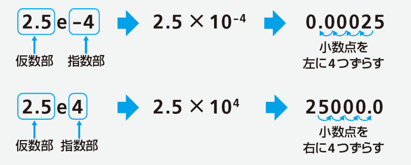

9.3. 第2章 Pythonの基本¶
型と算術演算¶
型¶
データの種類のことを「型」とよぶ
はじめから準備されている型「組み込み型」
型 |
型名(日本語表記) |
値の例 |
|---|---|---|
int |
整数型 |
-1, 0, 1, 2, 10, 100 |
float |
浮動小数点型 |
小数点を含む数 -0.12, 0.0, 0.5,2.34 |
str |
文字列型 |
'hello', 'こんにちは' |
bool |
真偽値 |
True, False |
type関数による型の確認¶
type(値) または type(変数名) で型を確認できる
type(10)
<class 'int'> <--- 10はint型
type(0.5)
<class 'float'> <--- 0.5はfloat型
type('こんにちは')
<class 'str'> <--- 'こんにちは'はstr型
type(True)
<class 'bool'> <--- Trueはbool型
a = 10 <--- 変数aに10を代入
type(a)
<class 'int'> <--- aの値はint型
b = 'こんにちは' <--- 変数bに'こんにちは'を代入
type(b)
<class 'str'> <--- bの値はstr型
算術演算¶
覚えるべき用語
変数を含む算術演算¶
式に変数名が含まれる場合は、 変数に代入されている値が使用される
a = 10 <--- 変数aに10を代入
print(a + 3) <--- 式a + 3の値を出力
13
(変数aの値)+3 が変数bに代入される
b = a + 3
(変数aの値)+3 が変数aに代入される
つまりaの値が3増える
a = a + 3
算術演算の短縮表現¶
数値の型¶
プログラムコードへの記述のしかたで、型が異なる。
小数点を含まない → int型
小数点を含む → float型
type(0)
<class 'int'> <--- 0と言う表記はint型
type(0.0)
<class 'float'> <--- 0.0と言う表記はfloat型
演算と数値の型¶
int型どうしの加算・減算・乗算 → int型
int型どうしの除算 → float型
float型を含む演算 → float型
type(3 + 2)
<class 'int'> <--- int型どうしを加算，減算，乗算した結果はint型
type(3 -2)
<class 'int'>
type(3 * 2)
<class 'int'>
type(3 / 2)
<class 'float'> <--- int型どうしを除算した結果はfloat型
type(4 / 2)
<class 'float'> <--- 割り切れる場合でもfloat型
数値の型変換¶
int型 → float型 変数aは float 型になる
a = float(100)
100.0
float 型 → int 型 変数aは int 型になる小数点以下は切り捨て
a = int(9.6)
9
文字列とリストの扱い¶
文字列の扱い¶
+演算子による文字列の連結
a = 'AAA' + 'BBB'
AAABBB
a = 'AAA'
b = 'BBB'
c = a + b
AAABBB
*演算子による連結の繰り返し
a = 'ABC' * 3
ABCABCABC
数値→文字列の変換¶
数値を文字列のようには扱えない
× a = 500 + '円'
str(数値)で文字列に変換する
〇 a = str(500) + '円'
yearの値(int型)を文字列に変換してから連結
year = 2021
print(str(year) + '年')
2021年
変数の値の埋め込み¶
数値を文字列に変換してから連結
price = 550
print('この商品は' + str(price) + '円です')
この商品は550円です
フォーマット文字列を使用して簡潔に記述できる
price = 550
print(f'この商品は{price}円です')
この商品は550円です
f'文字列' とすると、文字列に含まれる {変数名} 部分が変数の値に置き換わる
フォーマット文字列の活用¶
フォーマット文字列
f'文字列' とすると、文字列に含まれる {変数名} 部分が変数の値に置き換わる
a = 5
b = 550
print(f'1つ{a}円です。{b}個で{a * b}円です')
1つ5円です。550個で2750円です
文字列→数値の変換¶
文字列を数値のようには扱えない
a = '500' <--- 文字列
b = a * 2 <--- bの値は'500500'になる
int(文字列)で整数に変換する
a = '500'
b = int(a) * 2 <--- bの値は1000になる
len関数による文字列の長さの取得¶
len(文字列) で文字列の長さ（文字数）を取得できる
len('Hello')
5
a = 'Python'
len(a)
6
数値の指数表現¶

print(2.5e-4)
0.00025
print(2.5e4)
25000.0
リスト¶
リストを使って、複数の値をまとめて管理できる
a = [10, 20, 30, 40, 50]
リストに格納された要素には、インデックスを使ってアクセスする
print(a[0]) <--- 先頭の要素
10
print(a[1]) <--- 2番目の要素
20
print(a[4]) <--- 2番目の要素
50
※ インデックスは0から始まる
マイナスのインデックス¶
a = [10, 20, 30, 40, 50]
インデックスにマイナスの値も使える
print(a[-1]) <--- 末尾の要素
50
print(a[-2]) <--- 後ろから2番目の要素
40
print(a[-5]) <--- 後ろから5番目の要素
10
リスト内の値の変更¶
インデックスを指定して値を変更できる
a = [10, 20, 30, 40, 50]
print(a) <--- リストの全要素を出力
[10, 20, 30, 40, 50]
a[0] = 99 <--- 先頭の要素を99に変更
print(a)
[99, 20, 30, 40, 50]
a[-1] = 'A' <--- 文字列にもできる
print(a)
[99, 20, 30, 40, 'A']
リストの要素数の確認¶
len関数でリストの要素数を取得できる
a = [10, 20, 30, 40, 50]
len(a)
5
モジュールの利用¶
モジュールの使用¶
モジュールとは各種の機能を管理する単位
必要に応じてモジュールを読み込んでプログラムを作る
（「モジュールをインポートする」という）
import モジュール名
mathモジュールをインポートすると、sin, cos などの関数を使用できるようになる
import math
mathモジュールに含まれる関数・定数¶
mathモジュールの利用¶
mathモジュールのインポート
import math
mathモジュールに含まれる関数の利用
math.関数名(引数)
import math <--- mathモジュールをインポート
print(math.sqrt(2)) <--- sqrt関数で2の平方根を計算
1.4142135623730951
print(math.floor(12.345)) <--- floor関数で小数点以下を切り捨て
12
mathモジュールの利用¶
mathモジュールに含まれる定数の利用
math.定数名
import math
print(math.pi)
3.141592653589793
randomモジュールの利用¶
random モジュールに含まれる関数
関数 |
説明 |
|---|---|
random() |
0以上1未満の浮動小数点を返す |
randrange(x) |
0から(x-1)までの整数を返す |
choice(x) |
listからランダムに1つ選んだ要素を返す |
randint(a, b) |
a以上b以下のランダム整数を返す |
import random
random.randint(1, 6)
3 <--- 実行のたびに異なる値が出力される
randomモジュールの利用¶
import random <--- すでにrandomモジュールをインポートした後であれば記述は不要
janken = ["グー", "チョキ", "パー"] <--- 3つの要素を持つリスト
random.choice(janken) <--- リストjankenに含まれる要素からランダムに1つ選ぶ
グー <--- 毎回結果は異なる
モジュールに別名をつけて使う¶
import モジュール名 as 別名
import math as m <--- mathモジュールの別名をmとする
print(m.pi) <--- 別名を使って記述
3.141592653589793
ドキュメントを読む¶
Pythonの標準ライブラリのドキュメント
https://docs.python.org/ja/3/library/index.html
モジュールに含まれる関数を調べる¶
標準ライブラリ」のページ右上の「モジュール」のリンクから「math」を探してみよう。
ブラウザの「検索」機能も使ってみよう（[Ctrl]+[F]）
https://docs.python.org/ja/3/library/math.html#module-math
練習問題¶
問題 1¶
以下の記述について、正しいものには○を、誤りのあるものには×をつけてください。
（1） 一度int型の値を代入した変数aに対して、後から文字列を代入することはできない。
（2） int型の値とfloat型の値を加算するときには、その前にint型の値をfloat型に型変換しておく必要がある。
（3） int型とfloat型の値を含む算術演算の結果はfloat型になる。
（4） a = int(3.8)と記述した場合、変数aの値は4になる。
問題 1（解答）¶
以下の記述について、正しいものには○を、誤りのあるものには×をつけてください。
×（1） 一度int型の値を代入した変数aに対して、後から文字列を代入することはできない。
×（2） int型の値とfloat型の値を加算するときには、その前にint型の値をfloat型に型変換しておく必要がある。
〇（3） int型とfloat型の値を含む算術演算の結果はfloat型になる。
×（4） a = int(3.8)と記述した場合、変数aの値は4になる。
(3になる)
問題 2¶
次の値を求める式を書いてください。
（1） 100を9で割った商
（2） 1000を7で割った余り
（3） 3の5乗
問題 2 （解答）¶
次の値を求める式を書いてください。
（1） 100を9で割った商
100 // 9
（2） 1000を7で割った余り
1000 % 7
（3） 3の5乗
3 ** 5
問題 3¶
次の命令文を、加算代入（+=）、減算代入（-=）、乗算代入（*=）、除算代入（/=）、剰余代入（%=）の演算子を使って、短い表現に書き換えてください。
（1） a = a + 5
（2） b = b – 6
（3） c = c * a
（4） d = d / 3
（5） e = e % 2
問題 3 （解答）¶
次の命令文を、加算代入（+=）、減算代入（-=）、乗算代入（*=）、除算代入（/=）、剰余代入（%=）の演算子を使って、短い表現に書き換えてください。
（1） a = a + 5
a += 5
（2） b = b – 6
b -= 6
（3） c = c * a
c *= a
（4） d = d / 3
d /= 3
（5） e = e % 2
e %= 2
問題 4¶
次のプログラムコードを実行した後の変数aの値を答えてください
（1）
a = 3
a *= 3
（2）
b = 2
a = b * b
（3）
a = int(1.9)
（4）
x = 'XXX'
y = 'YYY'
a = x + y
問題 4 （解答）¶
次のプログラムコードを実行した後の変数aの値を答えてください
（1）
a = 3
a *= 3
9
（2）
b = 2
a = b * b
4
（3）
a = int(1.9)
1
（4）
x = 'XXX'
y = 'YYY'
a = x + y
XXXYYY
問題 5¶
「私は21歳です。」という文字列が出力されるように作成した次のプログラムコードは、実行するとエラーが発生します。適切に動作するように修正してください
age = 21
print('私は' + age + '歳です。')
問題 5 （解答）¶
「私は21歳です。」という文字列が出力されるように作成した次のプログラムコードは、実行するとエラーが発生します。適切に動作するように修正してください
age = 21
print('私は' + age + '歳です。')
age = 21
print('私は' + str(age) + '歳です。')
フォーマット文字列を使う場合
age = 21
print(f'私は{age}歳です。')
問題 6¶
mathモジュールを利用して、cos(120°)の値を求めてください
問題 6 （解答）¶
mathモジュールを利用して、cos(120°)の値を求めてください。
import math
print(math.cos(math.radians(120)))
※ 別解
import math
print(math.cos(2 / 3 * math.pi))